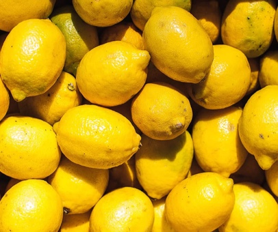
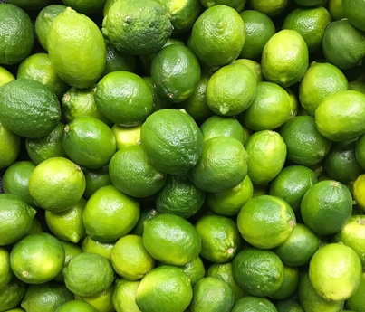

Eating citrus fruits could be good for your heart.
People who eat higher amounts of these fruits had lower rates of heart disease and stroke.
Refresh yourself with some Vitamin C
-

-

-

All of the citrus fruits are noted for their fragrance.
This is due to limonoids and flavonoids (both of which have strong antioxidant and antibacterial properties).
They can help prevent kidney stones, as they contain high levels of citrate.
Lemons are the highest, drinking diluted lemon juice daily has been shown to decrease kidney stone formation.